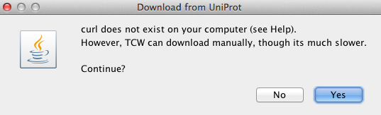
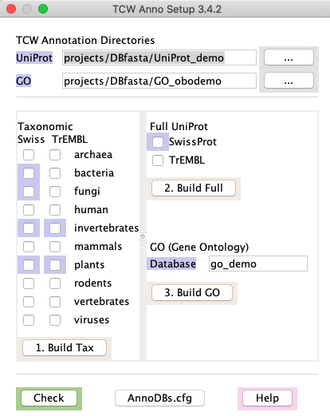
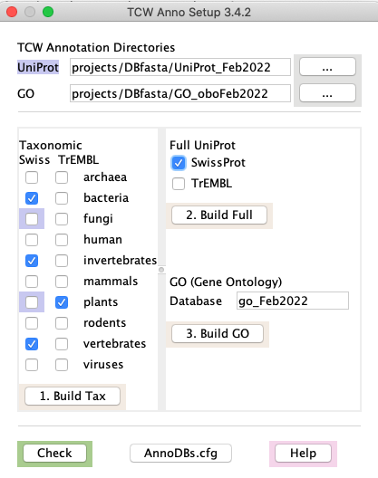
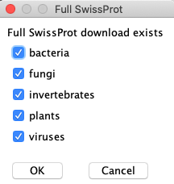
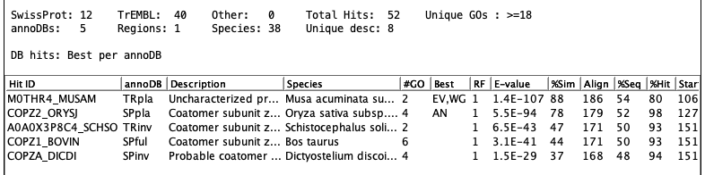
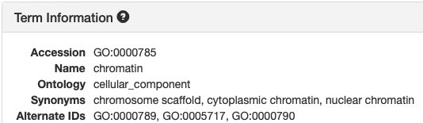
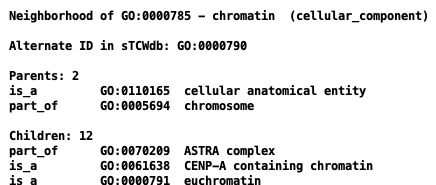
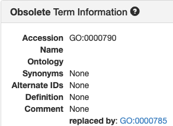
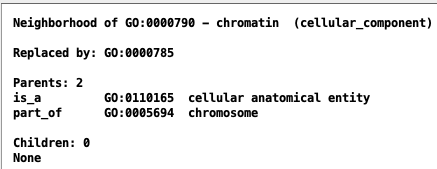

|
|
runAS - Annotation Setup Guide |


|
|
|
|||
To prepare for annotation with
Tested:
| Contents: | |
Overview | Go to top |
The term "AnnoDB" refers to any database that will be used for annotation, i.e. the sequences in TCW will be searched against all AnnoDB databases and the hits stored in the single TCW database (sTCWdb) for query.
Requirements:
→| You can get |
 |
{kind=link}
Processing steps: The TCW
- Create the directory under projects/DBfasta for the downloads and generated FASTA files.
- Download the selected Taxonomic UniProts .dat files and create FASTA files.
- Download the selected full UniProt .dat file and create a FASTA file of the sequences not found in any the downloaded taxonomic files.
- Create GO database, which contains mappings from UniProt IDs to GO, KEGG, EC, Pfam and InterPro.
- Download go-basic.obo from http://current.geneontology.org/ontology/
- Create a local mySQL GO database (GOdb) with the information from this file.
- Add information to the GOdb from the .fasta and .dat files in the UniProt directory.
- Create the file projects/AnnoDBs_UniProt_<date>.cfg to be imported to
runSingleTCW .
| Memory and Time | This can take a lot of memory and time, so make sure to read this section. |
| What AnnoDBs to use | To reduce the memory and time, make sure to read this section. |
| Creating AnnoDBs from other... | Other databases, such as NCBI nr, can be used for annotation but they will not have GO, KEGG, EC, Pfam, or InterPro. |
Running the demo | Go to top |
The TCW package provides subsets of UniProt for annotating the demo.
In order to add GO annotations, a local GO mySQL 'demo' database needs to be created.
|  |
{kind=link}
Details about the Demo setup
In the projects/DBfasta directory, there is the sub-directory UniProt_demo and GO_obodemo, which contains the following:
GO_obodemo:
go_basic.obo
UniProt_demo:
sp_bacteria/ sp_fungi/ sp_plants/ tr_plants/
sp_full/ sp_invertebrates/ tr_invertebrates/
Each taxonomic directory has a .dat and a .fasta file, which are very small subsets of the
original UniProt taxonomic .dat file.
Using runAS | Go to top |
|  |
{kind=link}
To force a check, or to view the UniProts in an existing goDB, select the
 A log of the processing is written to projects/DBfasta/logs/runAS.log.
See the log file for an example.
A log of the processing is written to projects/DBfasta/logs/runAS.log.
See the log file for an example.
Important points:
runAS will not replace an existing downloaded file: It will overwrite a .fasta file, but never a .dat file. If you want a .dat file downloaded again, you must remove it yourself.
- Build GOdb only after all desired taxonomic and full databases are downloaded: It is important that you create the GO database right after downloading
the UniProt files so that they correspond. It is also important that you have downloaded all desired taxonomic and
full UniProt databases.
- Only download what you need!
See Memory and Time and What AnnoDBs to use.
runMultitCW : If multiple sTCWdbs are to be compared usingmultiTCW , it is important they use the same set of AnnoDBs and GO database (see Entering AnnoDBs).
Full subsets:
| When you select The FASTA file will have a suffix indicating what subset it corresponds to. For example, the selection on the right would create the file uniprot_sprot_xBFxIxPxxV.fasta, where the 10 characters represent the 10 taxonomic databases in alphabetic order, and the capital letters represent the taxonomic sequences removed (Bacteria, Fungi, Invertebrate, Plant, Virus). Details: You may unselect all entries and it will create a FASTA file of all sequences. When |  |
{kind=link}
Details and file structure | Go to top |
Label Highlights
- At the top:
- If the
UniProt directory label is highlighted in blue, it exists. - If the
GO directory label is highlighted in pink, it exists but the GO OBO file has not been downloaded.
If theGO directory label is highlighted in blue, the GO OBO file has been downloaded.
- If the
- On the middle right:
- If the GO
Database label is highlighted in blue, the GO database exists.
- If the GO
Clear checkbox: If a
Pink checkbox: If the .dat file exists, but the .fasta file does not, the checkbox will be highlighted pink.
Check the pink box(s) and run
Blue checkbox: If both the .dat file and the .fasta file exists, the check box will be highlighted blue.
File Structure
For each taxonomic and full UniProt that you downloaded, a directory will be created under the
./TCW/projects/DBfasta/UniProt_Dec2021%> ls * sp_archaea: uniprot_sprot_archaea.dat.gz uniprot_sprot_archaea.fasta sp_full: uniprot_sprot.dat.gz uniprot_sprot_AxxxxxxxxV.fasta sp_viruses: uniprot_sprot_viruses.dat.gz uniprot_sprot_viruses.fastaWhen you run the
Compress Fasta: If you plan on using
cd projects/DBfasta/UniProt_<date> gzip */*.fasta
GO (Gene Ontology)
The go-basic.obo file is downloaded from http://current.geneontology.org/ontology/.
Database: This text entry on the
The processing steps are as follows:
- Download the GO Basic OBO file to GO directory.
- Build a GO specific MySQL database (referred to as GOdb) with the contents of the file.
- Add the UniProts from all subdirectories under the UniProt directory (e.g. projects/DBfasta/UniProt_Mar2021) to the GOdb.
Clean up | Go to top |
- All "dat.gz" files in the UniProt directories, as the information has been transferred to the FASTA files and GO database.
- The GO directory, as the information has been transferred to the GO database.
For the FASTA files that you will be using
When your calculating space, remember that the
/TCW/projects/DBfasta/UniProt_Dec2021/sp_full% ls -hlG -rw-r--r-- 1 cari staff 597M Dec 20 07:07 uniprot_sprot.dat.gz -rw-r--r-- 1 cari staff 54M Dec 20 15:55 uniprot_sprot_xBFxIxPxxV.fasta -rw-r--r-- 1 cari staff 55M Dec 20 16:15 uniprot_sprot_xBFxIxPxxV.fasta.dmnd
Memory and Time | Go to top |
Downloads on 6-Jun-2021 onto a Linux machine with a ~500 Mbsp download connection and 128Gb of RAM on a Sunday afternoon. Note, there can be considerable difference in download times.
| File | .dat Size | Download | .fasta Size1 | Creation |
|---|---|---|---|---|
| uniprot_sprot_bacteria.dat.gz | 203Mb | 0m:27s | 150Mb | 0m:25s |
| uniprot_sprot_fungi.dat.gz | 49Mb | 0m:15s | 21Mb | 0m:04s |
| uniprot_sprot_invertebrates.dat.gz | 34Mb | 0m:05s | 14Mb | 0m:02s |
| uniprot_sprot_plants.dat.gz | 51Mb | 0m:10s | 21Mb | 0m:04s |
| uniprot_sprot_viruses.dat.gz | 16Mb | 0m:06s | 9Mb | 0m:01s |
| uniprot_sprot.dat.gz | 587Mb | 1m:09s | 55Mb2 | 1m:43s |
| uniprot_trembl_bacteria.dat.gz | 87Gb | 1h:57m:02s | 64Gb | 2h:24m:45s |
| uniprot_trembl_fungi.dat.gz | 8.3Gb | 13m:41s | 7.4Gb | 13m:33s |
| uniprot_trembl_invertebrates.dat.gz | 7.8Gb | 12m:05s | 6.8Gb | 12m:50s |
| uniprot_trembl_plants.dat.gz | 12Gb | 16m:21s | 10.3Gb | 18m:57s |
| uniprot_trembl_viruses.dat.gz | 3.5Gb | 5m:20s | 2.3Gb | 5m:21s |
2The subset, i.e. full SwissProt minus all downloaded taxonomic entries.
GO database
It takes less than a minute to download the GO file. The time it takes to build the GO database is proportional to the number of UniProts to be processed. For example,
| Machine | AnnoDBs | Time | Database size |
|---|---|---|---|
| MacOS Catalina | SwissProt Plant and Full, TrEMBL Plant | 24m:47s | 2.7Gb |
| Linux (as specified above) | The 11 taxonomic and full listed above | 10h:42m:27s1 | 26Gb1 |
What AnnoDBs to use | Go to top |
- Only download what is relevant!
- Download all relevant SwissProt files and the Full SwissProt UniProt.
- Download only the most relevant TrEMBL files, and never the Full TrEMBL UniProt unless absolutely necessary.
- Do not perform constant downloads, it is a drain on the UniProt servers.
The UniProts do not change that fast, and it changes 'best' hits in TCW, which can disturb any on-going analysis.
The dataset used for the following tests is from de novo assembled sequences from Andropogon gerardii, which is related to Sorghum. It was downloaded from Dryad and published by Hoffman and Smith (2017). The full dataset had >60k transcripts, which was reduced to 27,085 for faster tests.
Four annotations were compared:
| Annotation | AnnoDBs | #Annotated |
|---|---|---|
| #1 | sp_plants, tr_plants, sp_ful | 25,049 (92.5%) |
| #2 | #1 + sp_virus, sp_fungi, sp_invertebrate, sp_bacteria | 25,052 (92.5%) |
| #3 | #2 + tr_virus, tr_fungi, tr_invertebrate, tr_bacteria, tr_full | 25,070 (92.6%) |
| #4 | #1 + nr | 25,160 (92.9%) |
Using only sp_plants, tr_plants, and sp_ful, 92.5% of the transcripts were annotated compared with 92.9% using the entire NR database. If your organism is not closely related to any model organism, then there will likely be a bigger difference.
Creating AnnoDBs from other databases | Go to top |
Description lines
The description line is the ">" line that describes the subsequent sequence in a FASTA file.
From it,
- DBtype: used in naming the tab output file and is used in
viewSingleTCW to aid in identifying where the hitID is from. - hitID: the unique identifier of the hit.
- description: generally the functional description
- species: the species
UniProt
>sp|Q9V2L2|1A1D_PYRAB Putative 1-ami OS=Pyrococcus abyssi GN=PYRAB00630 PE=3 SV=1v
- The 'sp' is the DBtype. For TrEMBL, the first two characters would be 'tr'.
- The third entry of the first string is the identifier (e.g. 1A1D_PYRAB)
- The string up to the OS is the description.
- The string after the "OS=" is the species.
NCBI nr (See Download NR)
>XP_642837.1 hypothetical protein DDB_G0276911 [Dictyostelium discoideum AX4]
- The first entry is the identifier (e.g. XP_642837.1). Note, there is no longer a way to detect the database origin within the file, hence, the DBtype will be the generic 'PR' for protein.
- The text from the first space to the first "[" is the description.
- The text within the "[]" is the species.
Generic
If you have a file other than UniProt or nr, make the descriptor names as follows:
>CC|ID description OS=species
- CC is the type code, and will be used as the DBtype in TCW.
- ID is the unique identifier
- Everything up to the OS is the description
- Everything after the OS is the species
Example 1: The TCW perl script scripts/formatPlantTFDB.pl takes as input a file from PlantTFDB, which has header lines like:
>KFK36254.1 Arabis alpina|G2-like|G2-like family proteinand converts them to header lines:
>tf|G2_like_1 G2-like family protein {KFK36254.1} OS=Arabis alpina
The DBtype will be "tf"". If the taxonomy entered into Example 2: The TCW python script scripts/formatNCBIrna.py takes as input an RNA file from NCBI, which has header lines like:
>XM_002436391.2 PREDICTED: Sorghum bicolor GDP-mannose 4,6 dehydratase 1 (LOC8069086), mRNAand converts them to header lines:
>XM_002436391.2 GDP-mannose 4,6 dehydratase 1 (LOC8069086), mRNA OS=Sorghum bicolorAs this does not have a type code at the beginning, its type will default to "NT". If the taxonomy is entered as "sb", the abbreviation for this database will be NTsb. The script can be modified to add a type code.
Entering AnnoDBs and GOs into runSingleTCW | Go to top |
→ Select
| projects/AnnoDBs_UniProt_<date>.cfg | This will use the AnnoDBs & GO written by |
| projects/<project-name>/sTCW.cfg | This will use the AnnoDBs & GO used by another project. |
→ Now you are ready to run

AnnoDBs can be entered using the
The GO database and GO slim category are defined or changed in the
Why use taxonomic databases instead of the full UniProt | Go to top |
The following shows an example of a set of hit proteins:
{kind=link}
The following shows a table of sequences:
The following shows the details of a specific sequence:

Parsing go-basic.obo | Go to top |
[Term] id: GO:0000785 name: chromatin namespace: cellular_component alt_id: GO:0000789 alt_id: GO:0000790 alt_id: GO:0005717 def: "The ordered and organized complex of DNA, protein, .... comment: Chromosomes include parts that are not part of .... synonym: "chromosome scaffold" RELATED [] synonym: "cytoplasmic chromatin" NARROW [] synonym: "nuclear chromatin" NARROW [] xref: NIF_Subcellular:sao1615953555 is_a: GO:0110165 ! cellular anatomical entity relationship: part_of GO:0005694 ! chromosomeTCW parses for the following keywords:
| Keyword | AmiGO term | TCW term | Example |
|---|---|---|---|
| id | Accession | GO ID | GO:0000785 |
| name | Name | Description | chromatin |
| namespace | Ontology | Domain | cellular_component |
| is_a | is_a | is_a | GO:0110165 |
| relationship: part_of | ? | part_of | GO:0005694 |
| alt-id | Alternate ID | Alternate ID | GO:0000790 |
| replaced by | Replaced by | GO:0000785 | |
| is_obsolete: true | Name: obsolete | Description: obsolete | obsolete replicative cell aging |
Views in AmiGO and TCW:
| AmiGO | TCW |
|---|---|
|  |  |
|  |  |
{kind=link}
{kind=link}
{kind=link}
{kind=link}
- UniProt occasionally uses the Alternate IDs and has a few Obsolete GO terms.
- I cannot guarantee that AmiGO always treats "alt_id" as specified here.
Links to relevant databases | Go to top |
- Go to UniProt Downloads.
- In the second line from the top, it says "For downloading complete data sets we recommend using ftp.uniprot.org." Click the ftp.uniprot.org.
- This brings up the UniProt download directories in a Finder window. You may view it as "Guest".
- Click "Current_release", "knowledgebase". Here you will see "complete" and "taxonomic_divisions".
- NCBI nr (https://ftp.ncbi.nlm.nih.gov/blast/db/FASTA).
- As of 24-Jan-21, it is 89GB and took 1h:45m to download.
- It is called nr.gz; since the File Chooser requires a FASTA suffix, rename it: mv nr.gz nr.fa.gz